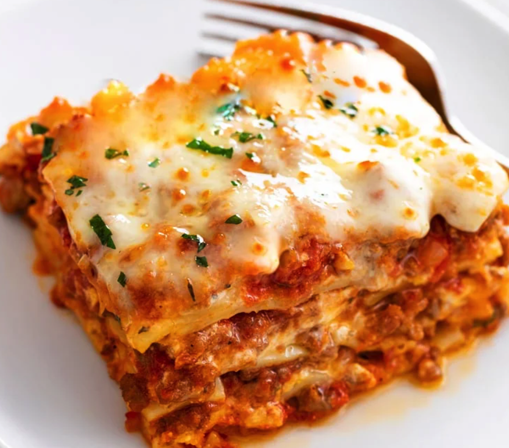

The lasagna Paradise

This Lasagna Recipe is easy to make with a creamy ricotta cheese mixture, savory meat sauce, and mozzarella cheese. BONUS: it’s make-ahead and freezer-friendly!
Ingredients
- Creamy Ricotta Mixture
- Savory Meat Sauce
- Mozzarella Cheese
Steps for the preparation:
-
How to make it?
- Spoon meat sauce on the bottom of a lightly greased casserole dish.
- Add 4 boiled lasagna noodles (or use no-boil or fresh noodles).
- Spread 1/3 of the ricotta cheese mixture on top.
- Add 1.5 cups of meat sauce.
-
How many layers does lasagna have?
-
Lasagna needs to have at least 3 layers in order to constitute a true lasagna. Most recipes have 3 or 4 layers.
-
We can opt for 3 layers of 4 lasagna noodles as that is what will fit in a 9 x 13 inch casserole dish. Additional layers would require a deeper baking dish.
-
Make Ahead Method
-
Assemble as outlined but do not bake. Cover and refrigerate for up to 2 days or freeze for up to 3 months.
-
Thaw frozen lasagna completely before baking.
-
Let chilled lasagna sit out at room temperature for 30 minutes prior to baking. Add an additional 10 minutes to covered baking time.
-
Reheating lasagna
-
To reheat leftover lasagna: Place it in a lightly greased, covered casserole dish. Bake at 350° for 25-30 minutes.
Return to main page